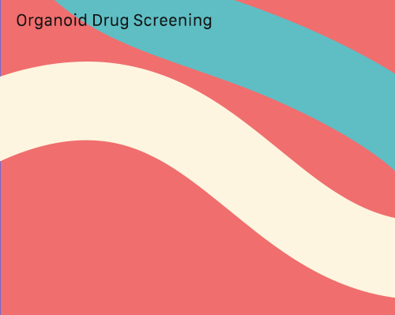
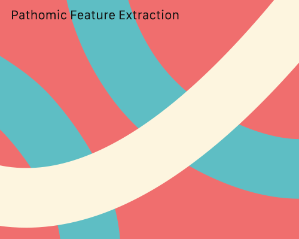

Jihyeon Je
Home
Research
Resume
Contact
Tumor Habit Modeling with Fokker-Planck Dynamics
Read More
Network optimizatin with limited bioimage data
Read More

High-throuput drug screening platform for glioma
Read More

Quantification of inflammation from pathology data
Read More
Segmentation using deep neural network model zoo
Read More
>
Geometric analysis of viral capsid structure
Read More